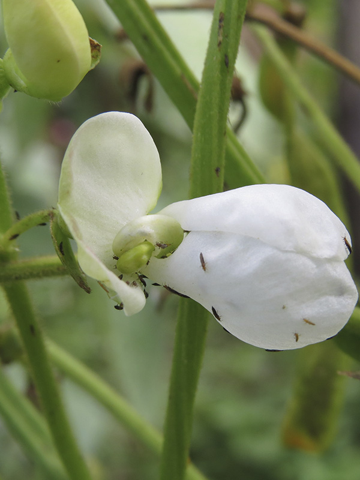
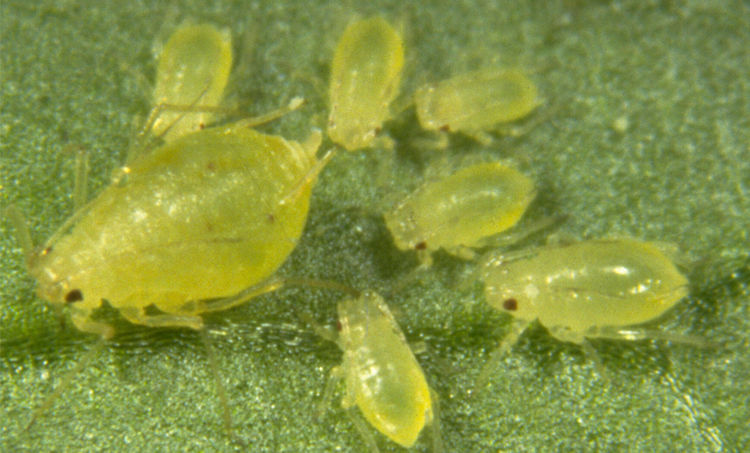

¿Conoces las plagas que afectan al cultivo de Arverja ?
Estas plagas se ha observado en los departamentos de Boyacá, Antioquia y Cundinamarca. Aunque no se han cuantificado pérdidas en el rendimiento de la arveja, el hongo es muy destructivo y afecta también otros cultivos como fríjol y habichuela.
Trips o Collarejos
( Frankliniella sp.)

Los trips son pequeños insectos alados de color amarillo pálido o marrón, pertenecientes al género Frankliniella. Miden entre 1 y 2 mm de largo y se alimentan perforando y succionando el contenido celular de hojas, flores y vainas. Se desarrollan rápidamente en climas secos y cálidos, y su ciclo biológico puede completarse en menos de 15 días, lo que favorece su rápida multiplicación en campo abierto. .
Provocan manchas plateadas o blanquecinas en hojas y flores debido a la succión de savia.
En flores y vainas jóvenes, ocasionan deformaciones, necrosis y caída prematura.
Las vainas afectadas muestran zonas plateadas con puntos negros (excrementos del insecto).
En ataques severos, las plantas se debilitan, disminuye la floración y se reduce la calidad y rendimiento del cultivo.
- Monitorear constantemente el cultivo, especialmente en épocas secas y calurosas.
-
Eliminar malezas cercanas que sirvan como refugio o fuente de alimento para los trips.
-
Evitar el exceso de fertilización nitrogenada, ya que atrae la plaga.
-
Usar trampas adhesivas azules o amarillas para detectar y reducir poblaciones.
-
Favorecer la presencia de enemigos naturales como Orius insidiosus y crisopas (Chrysoperla carnea).
-
En infestaciones altas, aplicar insecticidas selectivos como spinosad, abamectina o azadiractina (extracto de neem), alternando ingredientes activos para evitar resistencia.
-
Mantener buen manejo del riego y ventilación, reduciendo el polvo y el estrés de las plantas, condiciones que favorecen al insecto
Áfidos o Pulgones
(Myzus sp )

Los áfidos, conocidos como pulgones, son insectos pequeños de cuerpo blando, forma ovalada y color verde, negro o amarillento. Se agrupan en colonias en el envés de las hojas, tallos y brotes tiernos, donde succionan savia de la planta. Se reproducen rápidamente, especialmente en climas templados y secos, y algunas especies pueden transmitir virus entre plantas.
Succión de savia que provoca deformación, enrollamiento y amarillamiento de las hojas.
Retraso en el crecimiento y debilitamiento general de la planta
Excreción de mielada pegajosa, que favorece el crecimiento de fumagina (hongo negro sobre las hojas)
Reducción del rendimiento y disminución de la calidad del grano o fruto .
Actúan como vectores de enfermedades virales, lo que agrava su impacto económico
-
Monitorear frecuentemente los brotes tiernos y el envés de las hojas
-
Eliminar malezas y plantas hospederas cercanas que sirvan de refugio a los pulgones
-
Fomentar enemigos naturales como mariquitas (Coccinellidae), crisopas y avispas parasitoides (Aphidius colemani).
-
Evitar exceso de fertilización nitrogenada, ya que estimula brotes tiernos atractivos para los áfidos.
-
En casos severos, aplicar jabón potásico, aceite de neem o insecticidas selectivos como imidacloprid, pymetrozine o spirotetramat, alternando principios activos.
-
Mantener buena ventilación y drenaje en el cultivo, ya que los ambientes húmedos y densos favorecen su desarrollo.